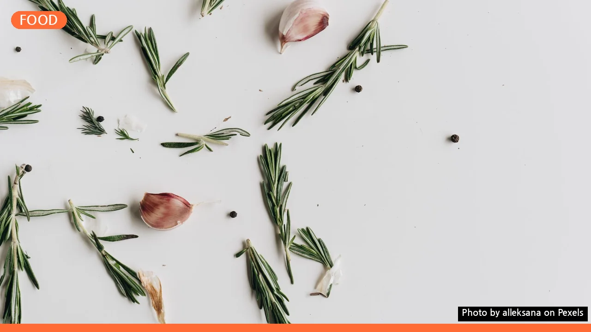
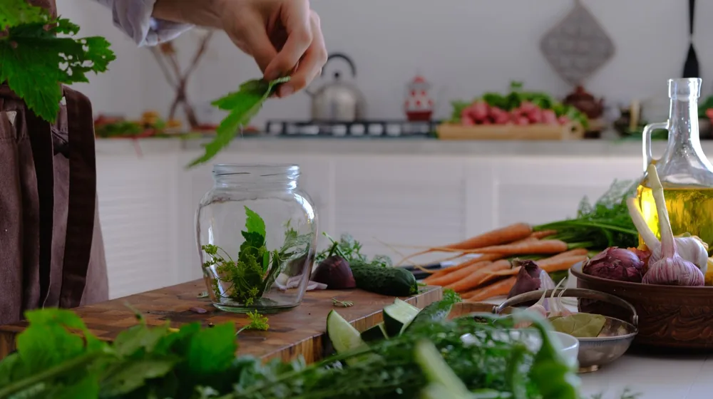
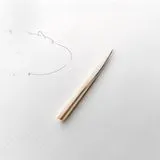

약선 밀키트 정기구독, 나에게 맞는 서비스는? 핵심 비교 가이드 (2026년 8월)
사진: alleksana / Pexels (무료 이미지, 출처 표기)
약선 밀키트 정기구독, 건강한 일상의 시작

바쁜 일상 속에서 건강한 식단을 챙기기란 쉽지 않습니다. 이때, 몸에 이로운 약재와 신선한 식재료로 구성된 약선 밀키트 정기구독 서비스는 좋은 대안이 될 수 있습니다. 집에서 간편하게 보양식을 즐기며, 식사 준비 부담을 덜고 건강까지 챙길 수 있기 때문입니다.
정체성 후킹 기법을 활용하자면, ‘건강한 삶을 지향하는 당신’이라면 약선 밀키트 구독을 통해 식단의 질을 한 단계 높일 수 있습니다. 하지만 다양한 서비스 중 어떤 것을 골라야 할지 고민될 수 있습니다. 이 글은 2026년 8월 기준으로 주요 약선 밀키트 정기구독 서비스의 핵심 정보를 비교하고, 당신에게 가장 적합한 선택을 돕기 위해 작성되었습니다.
주요 약선 밀키트 정기구독 서비스, 한눈에 비교하기
현재 시중에 여러 약선 밀키트 정기구독 서비스가 존재합니다. 각 서비스는 고유한 특징과 메뉴 구성, 가격 정책을 가지고 있으므로, 자신의 생활 방식과 건강 목표에 맞춰 신중하게 선택하는 것이 중요합니다. 아래 표는 대표적인 약선 밀키트 정기구독 서비스들의 주요 특징을 비교한 것입니다. (가상의 서비스명으로 구성되었습니다.)
위 표는 2026년 8월 기준이며, 각 서비스의 가격이나 메뉴 구성은 프로모션 및 시장 상황에 따라 변동될 수 있습니다. 정확한 정보는 각 서비스의 공식 홈페이지에서 확인하시길 권장합니다.
나에게 맞는 약선 밀키트 고르는 체크리스트
다양한 약선 밀키트 서비스 중 어떤 것을 선택해야 할지 막막하다면, 다음 체크리스트를 활용하여 자신에게 가장 적합한 서비스를 찾아보세요.
- 건강 목표 및 식단 제한 여부: 특정 건강 문제가 있거나, 알레르기 또는 채식 등 식단 제한이 있다면, 이를 고려한 맞춤형 메뉴를 제공하는지 확인하세요. (예: 저염식, 당뇨식 등)
- 예산: 한 끼 식사에 어느 정도의 비용을 지불할 의향이 있는지 고려해야 합니다. 주간 또는 월간 총 구독료를 확인하고 비교해 보세요.
- 메뉴의 다양성과 신선도: 매번 새로운 메뉴를 선호하는지, 아니면 검증된 시그니처 메뉴를 꾸준히 즐기는 것을 선호하는지 생각해 보세요. 재료의 원산지와 신선도 유지 방식도 중요한 요소입니다.
- 배송 주기 및 유연성: 주 1회, 격주 1회 등 배송 주기가 자신의 식단 계획과 맞는지 확인하고, 배송일 변경이나 일시 정지 기능이 유연한지도 살펴보는 것이 좋습니다.
- 조리 난이도 및 시간: 밀키트라도 어느 정도의 조리 과정이 필요한지 확인하세요. 빠르고 간단한 조리를 선호한다면, 준비 시간이 짧은 제품을 선택하는 것이 좋습니다.
- 취소 및 환불 정책: 구독 도중 서비스가 맞지 않을 경우를 대비해, 취소 및 환불 정책을 미리 확인해 두는 것이 현명합니다.
약선 밀키트 정기구독, 이렇게 시작하세요
약선 밀키트 정기구독을 시작하는 절차는 대부분의 온라인 구독 서비스와 유사합니다. 다음 단계를 참고하여 자신에게 맞는 서비스를 선택하고 구독을 시작해 보세요.
- 서비스 탐색 및 비교: 앞서 제시된 비교표와 체크리스트를 바탕으로 몇 가지 관심 가는 서비스를 선정합니다. 각 서비스의 공식 홈페이지를 방문하여 상세 정보를 확인합니다.
- 메뉴 및 플랜 선택: 서비스별로 제공되는 메뉴 구성(한식, 퓨전 등), 식수인원(1인, 2인 등), 그리고 배송 주기(주 1회, 격주 1회) 등을 고려하여 자신에게 맞는 구독 플랜을 선택합니다.
- 회원 가입 및 정보 입력: 선택한 서비스의 웹사이트나 앱에서 회원 가입을 진행하고, 배송 주소, 결제 정보 등 필수 정보를 정확하게 입력합니다.
- 첫 배송 및 조리: 설정된 배송일에 밀키트를 수령하면, 동봉된 레시피 카드나 앱의 안내에 따라 조리합니다. 대부분의 약선 밀키트는 복잡하지 않아 초보자도 쉽게 만들 수 있습니다.
- 피드백 및 조정: 몇 차례 이용 후, 메뉴나 배송 주기에 대한 만족도를 평가하고 필요하다면 구독 플랜을 변경하거나 일시 정지, 취소 등의 조치를 취할 수 있습니다.
약선 밀키트 정기구독, 이것이 궁금해요! (FAQ)
약선 밀키트 정기구독에 대해 자주 묻는 질문들을 정리했습니다.
Q: 약선 밀키트는 유통기한이 어떻게 되나요?
A: 대부분의 약선 밀키트는 신선 재료를 사용하므로, 배송받은 날로부터 2~3일 내에 조리하는 것이 좋습니다. 개별 포장된 식재료와 완성된 요리의 보관 방법을 각 서비스에서 제공하는 안내에 따라 따르는 것이 중요합니다. 냉장 보관을 기본으로 하며, 일부 재료는 냉동 보관이 가능할 수 있습니다.
Q: 특정 알레르기가 있는데도 이용할 수 있나요?
A: 네, 일부 서비스는 알레르기 유발 성분을 사전에 고지하거나, 특정 알레르기를 가진 고객을 위한 맞춤형 메뉴를 제공하기도 합니다. 구독 전 해당 서비스의 고객센터에 문의하거나 웹사이트의 알레르기 정보를 반드시 확인해야 합니다. '자연담은 약선'과 같은 서비스는 알레르기 프리 옵션을 제공하는 경우가 있습니다.
Q: 조리가 많이 어려운가요? 요리 초보도 할 수 있을까요?
A: 약선 밀키트는 간편함을 추구하기 때문에, 대부분의 메뉴가 쉬운 조리 과정을 거칩니다. 계량된 재료와 상세한 레시피 카드가 동봉되어 있어, 요리 초보자도 큰 어려움 없이 만들 수 있습니다. 복잡한 한식 약선 요리도 밀키트 형태로 쉽고 빠르게 즐길 수 있습니다.
Q: 구독을 일시 정지하거나 취소하는 것이 가능한가요?
A: 대부분의 약선 밀키트 정기구독 서비스는 구독 일시 정지 또는 해지 기능을 제공합니다. 다만, 정해진 배송일 이전에 미리 신청해야 하며, 서비스별로 규정이 다를 수 있으니 각 서비스의 약관을 확인하는 것이 필수입니다. 보통 다음 배송 며칠 전까지 변경이 가능합니다.
🔗 이 글도 함께 보면 좋아요: 정책서민금융, 나에게 맞는 상품은? 신청 자격부터 핵심 종류까지 완벽 정리
관련 추천 상품
약선 밀키트, 건강 밀키트, 한방 밀키트 관련 인기 상품 보러가기
이 포스팅은 쿠팡 파트너스 활동의 일환으로, 이에 따른 일정액의 수수료를 제공받습니다.
한눈에 보는 상품 목록

자연담은 약선
친환경 유기농 재료와 제철 약선에 집중한 밀키트 서비스로, 알레르기 프리 옵션을 제공합니다.
활기찬 약선밥상
한의사 자문을 기반으로 한 레시피와 체질별 맞춤 제안이 특징이며, 유연한 배송 주기를 가집니다.
미식 약선 한상
고급 식재료와 셰프의 레시피로 구성된 프리미엄 약선 밀키트로, 특별한 날을 위한 메뉴도 제공합니다.